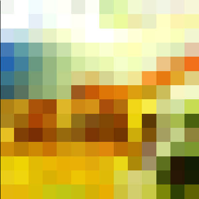
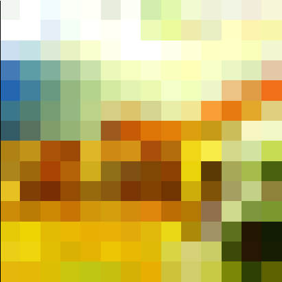

COS426 Assignment 1Image Processing — Batch Mode
Switch to: Interactive Editor
Minecraft Painting Filter
A filter designed by me that takes an image and converts it into a pixelized version
similar to the creation of paintings in minecraft. Here is an example of one such conversion
Push_Image=minecraft1.jpg&Pixel_Painting=0.999
{kind=link}
 

Brightness
Here is an example output where the image is made brigher with the luminance slider set to 0.3:
{kind=link}

Contrast
To apply contrast I looped through all the pixels in the image applying the given value formula to each RGB channel and then set the pixel to the new value.
Push_Image=leaves.jpg&Contrast=0.7

{kind=link}
Gamma
I applied the given gamma amount to each RGB channel of each pixel in the input image.
Push_Image=mesa.jpg&Gamma=1
{kind=link}
Vignette
I applied vingette by calculating the current distance from the center of the image at each pixel. If this distance was greater than the outerR, the pixel RGB was set to (0,0,0). If the pixel distance was less than the innerR, the RGB was untouched. If it fell between the values the alpha amount was calculated in proportion to the distance from outerR and innerR.
Push_Image=mesa.jpg&Vignette=0.25;1
{kind=link}
Histogram equalization
I found the luminance value for each pixel and added that to a hashmap where I could then calculate its occurances and balance the contrast of the image.
Push_Image=flower.jpg&Histogram_Equalization=
{kind=link}
Saturation
I applied the ratio and luminance values to each pixel in the input image.
Push_Image=leaves.jpg&Saturation=1

{kind=link}
White balance
I converted the image to the LMS color space and divided each channel by the value of the white color sent into the function.
Push_Image=town.jpg&White_Balance=[0.5,0.5,0.5,1]
![Push_Image=town.jpg&White_Balance=[0.5,0.5,0.5,1]](batch.html?Push_Image=town.jpg&White_Balance=[0.5,0.5,0.5,1]){kind=link}
Gaussian
I looped through the image and applied a 1D kernel generated using the formula given in the assignment description, I applied this to every RGB channel and kept track of the total amount for normalization. I then looped through the image again and did this in the y direction.
Push_Image=leaves.jpg&Gaussian=4
{kind=link}
Sharpen
I applied the given kernel to the image and returned the image.
Push_Image=leaves.jpg&Sharpen=
{kind=link}
Edge detect
Similar to the sharpen filter, I applied the kernel values to all pixels and returned.
Push_Image=leaves.jpg&Edge=
{kind=link}
Median filter
For each pixel (x,y) I looped through the surrounding pixels (2winR x 2winR kernel), took the RGB of each pixel and pushed it onto an array that could later be sorted and divided in half to find the median value. This value was then set to the pixel.
Push_Image=leaves.jpg&Median=3
{kind=link}
Bilateral filter
For each pixel (x,y) I looped through the respective window using the bilateral formula given to calculate the RGB values, normalized the result, and set the pixel equal to that in a new image.
Push_Image=mesa.jpg&Bilateral=4;2

{kind=link}
Random dither
I looped through every pixel, applied random noise to the grayscale image and then quantized.
Push_Image=mesa.jpg&Random=
{kind=link}
Floyd-Steinberg dither
I looped through each pixel and, using the given weights, applied the error amounts evenly to the following pixels.
Push_Image=mesa.jpg&Floyd-Steinberg=
{kind=link}
Ordered dither
Using the pseudocode from precept, I created an array with the weight values of each pixel, calculated the error and threshold, and set the quantization of the pixel based on if the error was greater than or less than the threshold amount.
Push_Image=mesa.jpg&Ordered=
{kind=link}
Sampling
For bilinear, I use Math.floor() and Math.ceil() to get the 4 closest pixels to the given (x,y). I then applied the formula from precept that weights each pixel based on its proximety to the (x,y) coordinate. For gaussian, I applied the gaussian value as a 2D kernel normalizing after all pixels had been considered and added to the current pixel.
Translate
Using the sampling function I moved each pixel to the new destination.
Push_Image=flower.jpg&Translate=-317;-182;point

Push_Image=flower.jpg&Translate=-317;-182;bilinear
Push_Image=flower.jpg&Translate=-317;-182;gaussian
{kind=link}
{kind=link}
{kind=link}
Scale
Using the sampling function I was able to scale up and down the image. At first I scaled the (x, y) coordinates themselves but found that this led to gapping when scaled up and instead applied the scale to the image size instead and divided by the ratio when sampling the original image.
Push_Image=mesa.jpg&Scale=2.03;point

Push_Image=mesa.jpg&Scale=2.03;bilinear
Push_Image=mesa.jpg&Scale=2.03;gaussian
{kind=link}
{kind=link}
{kind=link}
Composite
Based on the alpha value of the top image, I calculated the combined RGB values for the background image.
Push_Image=man.jpg&Push_Image=doge.jpg&Push_Image=alpha.png&Get_Alpha=&Composite=
{kind=link}
Morph
Using the precept slides I first gathered my initial morph lines and my final morph lines. I created an initial morph tranformation that went from initial --> halfway morphed and then a halfway --> final image morph. I then used my composite filter to animate between these results.
Push_Image=trump1.jpg&Push_Image=trump2.jpg&Morph=(0,1,0.1)

){kind=link}